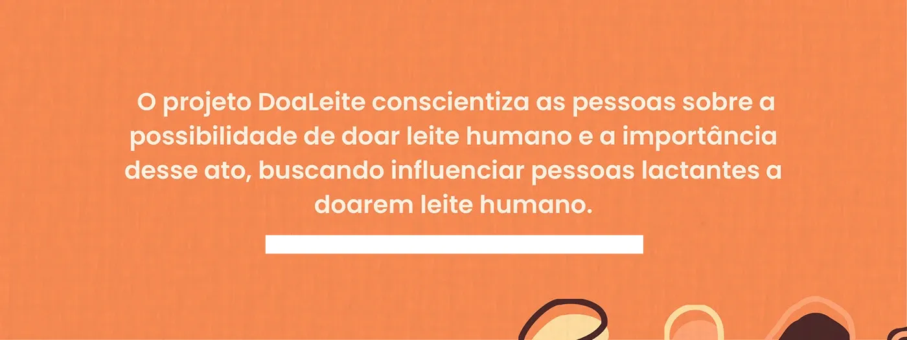
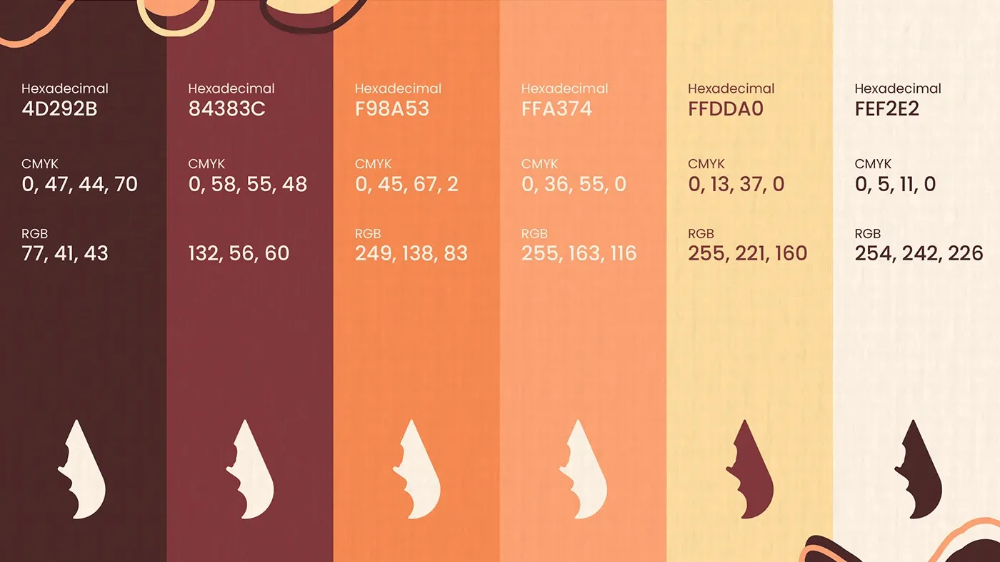
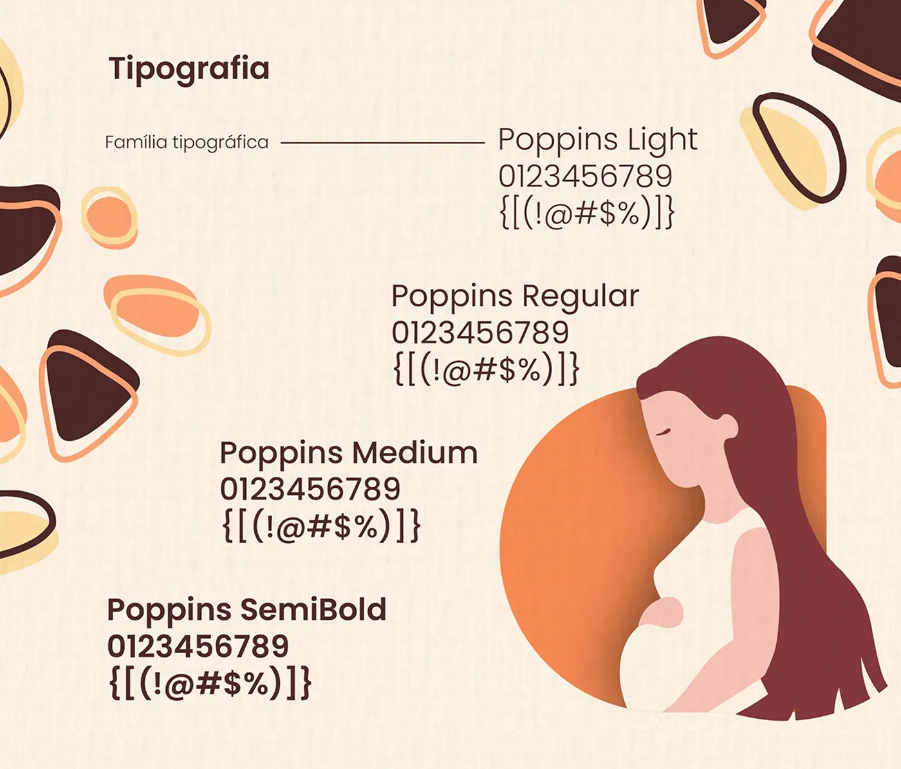
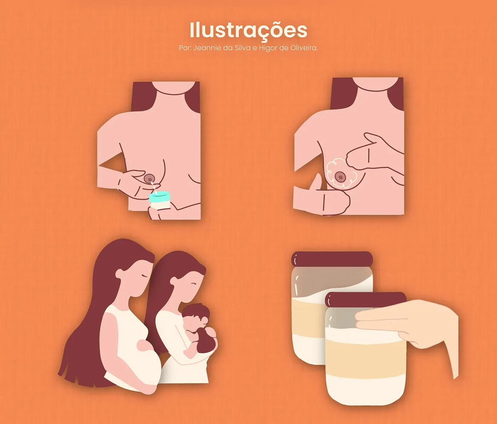
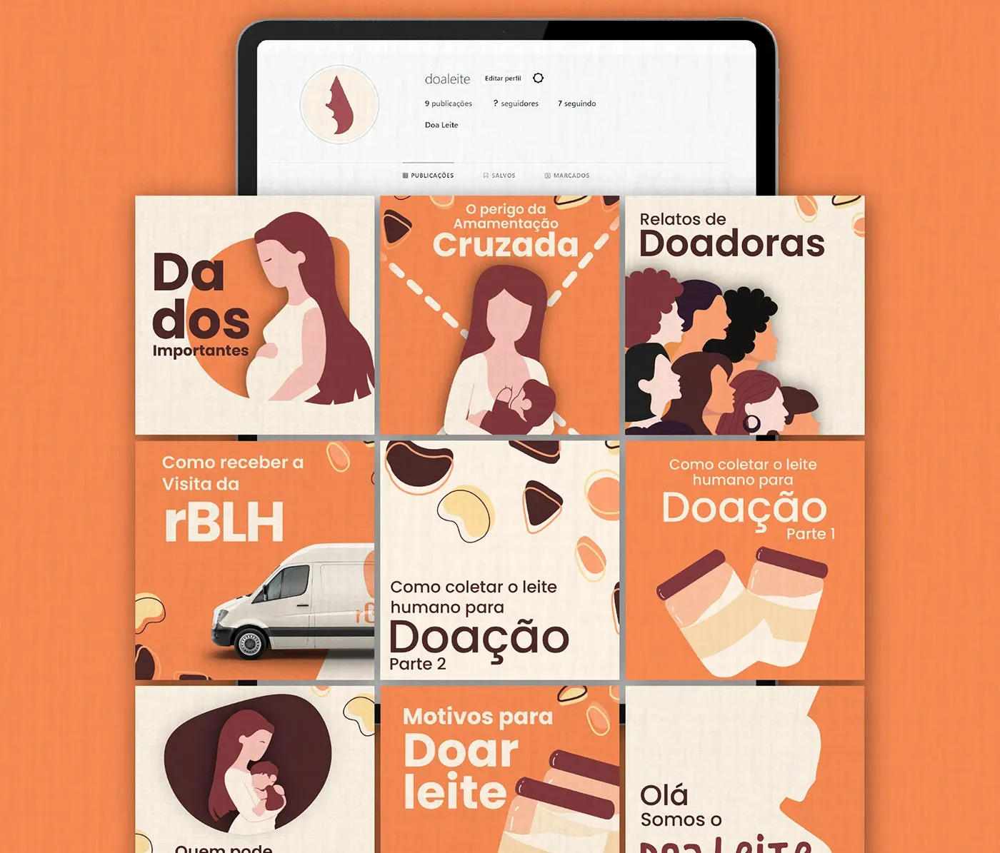
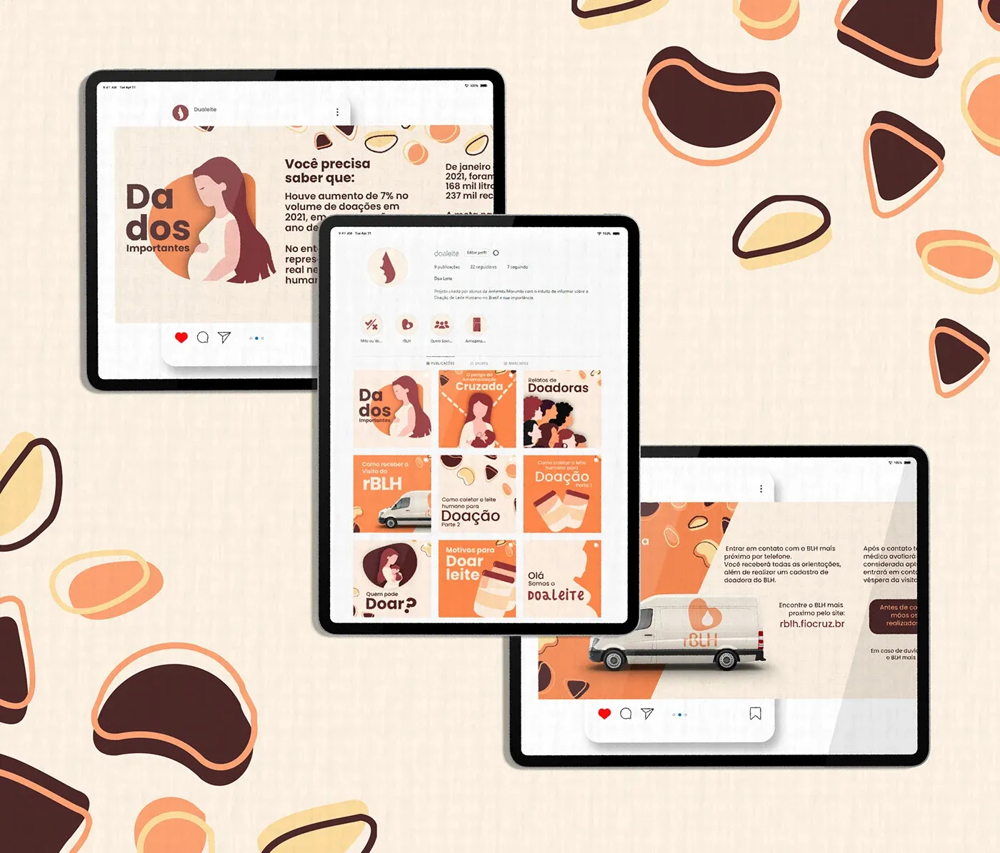

Doaleite
A warm awareness campaign created to explain that human milk can be donated · and why that act matters.
 Doaleite campaign identity
Doaleite campaign identityA sensitive subject becomes approachable through soft illustration, direct information and a human visual rhythm.
- Year
- 2024
- Role
- Campaign concept, visual identity, illustration and social applications
- Context
- Academic awareness campaign
- Disciplines
- Campaign · Visual Identity · Illustration
01 · Purpose
Information without distance
Doaleite makes milk donation visible and understandable, encouraging lactating people to consider donating while recognizing the care and generosity behind the act.

02 · Identity
Warm, calm and accessible
The palette moves from deep brown and burgundy to coral, peach and milk tones. Poppins creates a clear, friendly hierarchy across educational content.



03 · Campaign
A system for social education
Cards, carousels and device mockups demonstrate how the identity holds together across practical information, myths and calls to action.



Next projectMatcha Mojo
→